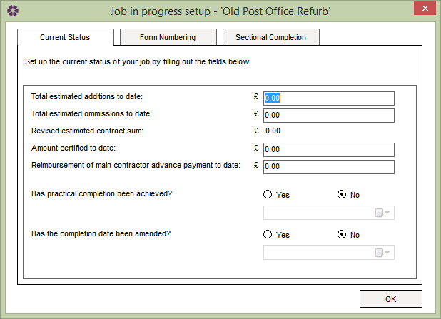

Job In Progress - Current Status Tab |
After entering the appropriate information in the Job Details tab, click on the
Job In Progress button to be presented with the following window:

Here the user can input the details from the previous job, which includes:
Total estimated additions to date – Enter the amount of any estimated additions to the contract sum, using figures from any previously issued Instructions.
Total estimated omissions to date – Enter the amount of any estimated ommissions to the contract sum, using figures from any previously issued Instructions.
Revised estimated contract sum – This field is automatically populated with the total estimated additions, minus the total estimated omissions.
The figure displayed in this field will be reflected in the approximate value of previous issued Instructions field in any subsequently added Instructions.
Amount certified to date – Enter the total amount certified to date.
Reimbursement of main contractor advance payment to date – Where applicable, enter the amount of any advance payment made to the contractor which has been reimbursed to date.
Has practical completion been achieved? – If practical completion has been achieved on the active job in progress, select the Yes option.
Enter the date achieved by clicking on the 'Achieved On' button and selecting a date from the calendar.
Has the completion date been amended? - If the completion date has been amended on the active job in progress, select the Yes option.
Enter the amended date for completion by clicking on the 'Amended Date' button and selecting a date from the calendar.
See Also:
Create new Job in Progress
Job in Progress - Sectional Completion tab
Job in Progress - Form Numbering tab